About
Where every brew tells a story of family, faith, and bringing people together.
Where every brew tells a story of family, faith, and bringing people together.
Kia Ora Cafe represents a beautiful fusion of two cultures—bringing the authentic coffee traditions of New Zealand to the warm, vibrant heart of the Philippines. Founded by Jasmine Sison Taboy, our story is one of passion, connection, and a shared love for meaningful experiences.
Across our 11 branches, we've created more than just places to enjoy great coffee. Each location is a sanctuary—a nature-inspired space where conversations flow, friendships form, and moments are cherished. From our carefully sourced beans to our cozy, book-filled corners, every detail is designed to make you feel at home.
But we're more than a café. We're a community. Through charity partnerships, local events, and cultural gatherings, we strive to make a positive impact—one cup, one connection at a time. At Kia Ora, we don't just serve coffee—we serve belonging.
Beyond serving exceptional coffee, we provide spaces designed for connection and growth
Cozy corners with books for quiet moments.
Cozy corners with books for quiet moments.
Books
A space for gatherings and local events.
A space for gatherings and local events.
Events
Learn brewing and latte art skills.
Learn brewing and latte art skills.
Courses
To create welcoming spaces where authentic New Zealand coffee culture and Filipino warmth come together, fostering community through every cup we serve.
To be the heart of every neighborhood we're in—a place where meaningful connections happen, cultures blend naturally, and every visit leaves you feeling uplifted and inspired.
Our journey began with a simple dream and a leap of faith. Jasmine, living far from home in New Zealand, found herself at a crossroads—caught between two cultures and uncertain of her path. Though she couldn't drink much coffee herself, she grew up watching her father and two brothers find joy in their daily coffee rituals, their laughter and conversations flowing as freely as the brew in their cups. Their shared love for coffee planted a seed in her heart.
In moments of doubt, she held onto the promise: "For I know the plans I have for you,” declares the Lord, “plans to prosper you and not to harm you, plans to give you hope and a future." (Jeremiah 29:11) . There were times when the dream felt distant, when challenges made her wonder if she was cut off from that vision. Yet in those quiet moments of stillness, she learned to trust in a greater plan. "Be still, and know that I am God;" (Psalms 46:10) became her anchor, a reminder that some of the best things grow from patient waiting and faithful steps.
From that first small cafe in Sual to 11 branches across the Philippines, each location stands as a testament to perseverance and the belief that even when we feel lost, our cries are heard. Kia Ora Cafe is more than a business—it's a story of hope, a bridge between nations, and proof that beautiful things can bloom when we trust the journey, inspired by the simple love of coffee that brought her family together.
At Kia Ora Cafe, our team is the heart and soul of everything we do. From our expert baristas who craft each cup with precision, to our kitchen staff who prepare fresh meals daily, and our branch managers who ensure every visitor feels welcomed—we're a family united by our love for coffee and community.
Each team member brings unique skills and warm hospitality that make Kia Ora Cafe more than just a coffee shop, but a home away from home. We believe in nurturing talent, fostering growth, and brewing not just great coffee, but great careers.
 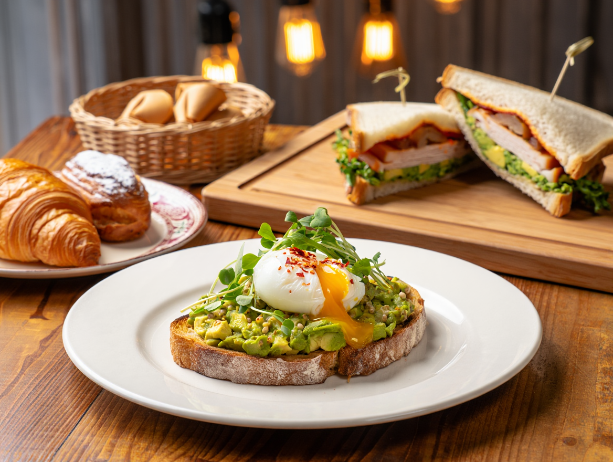
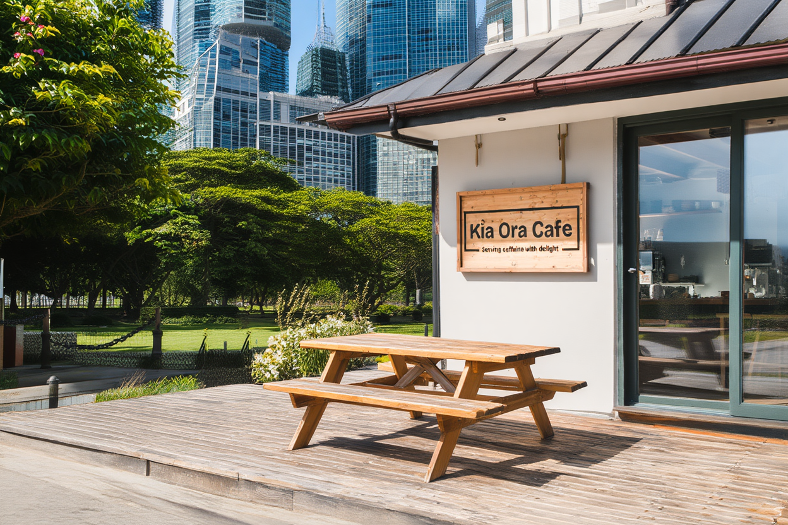
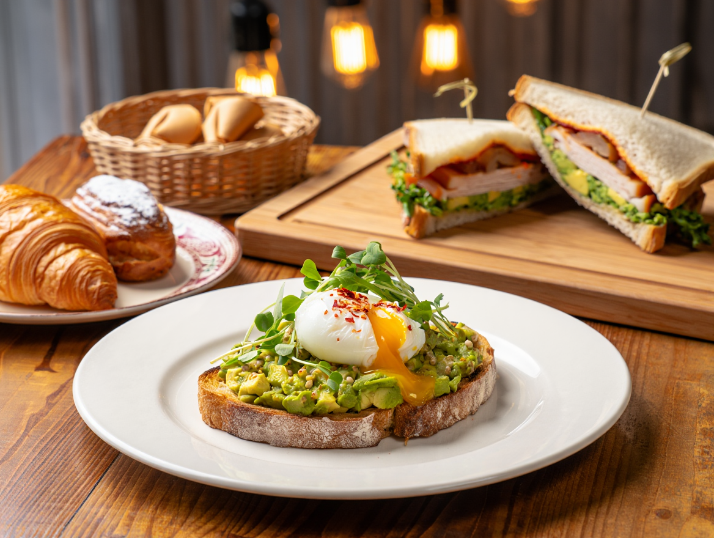
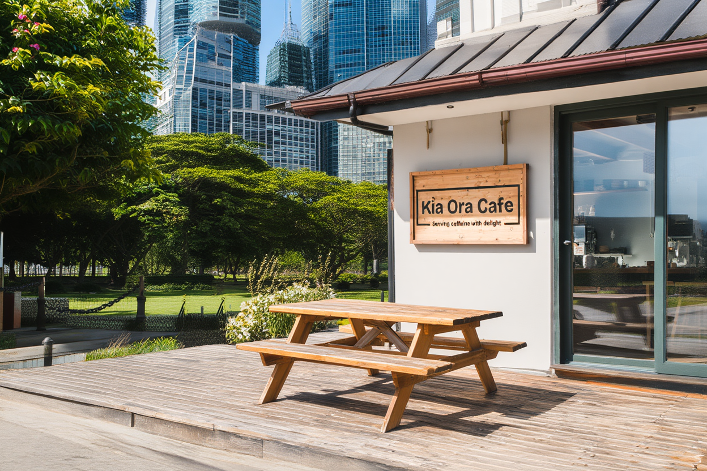

 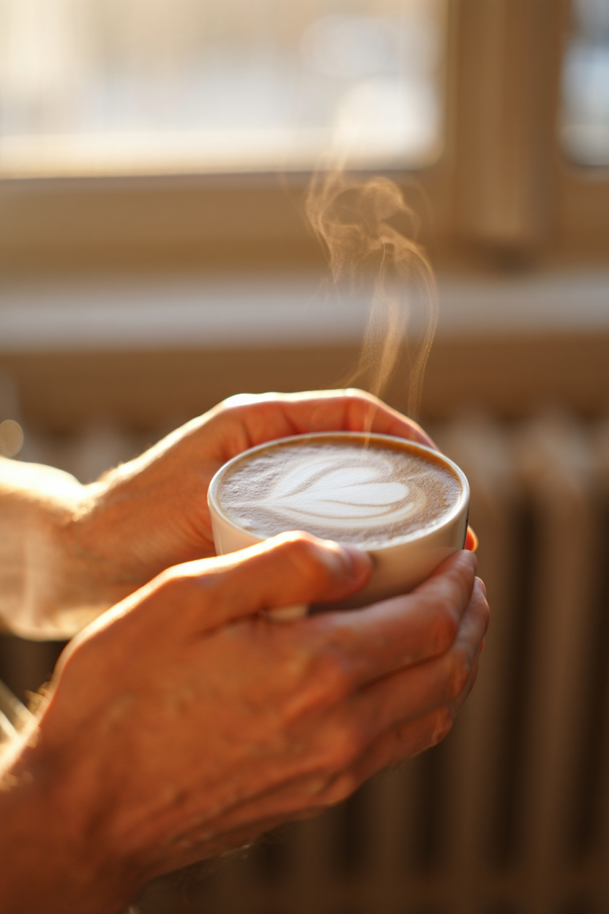
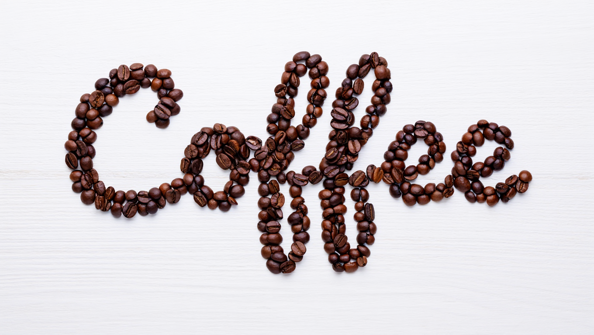
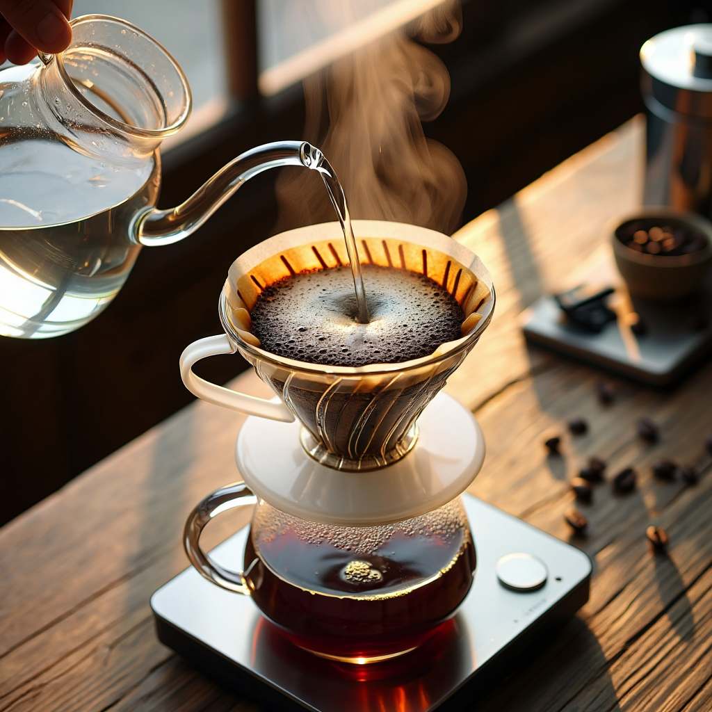
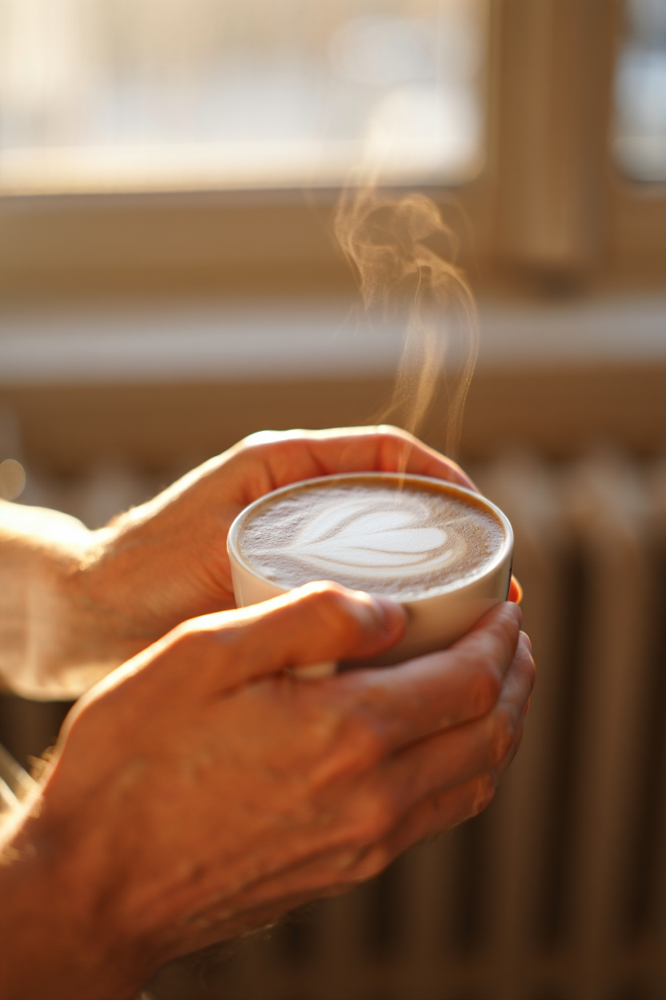
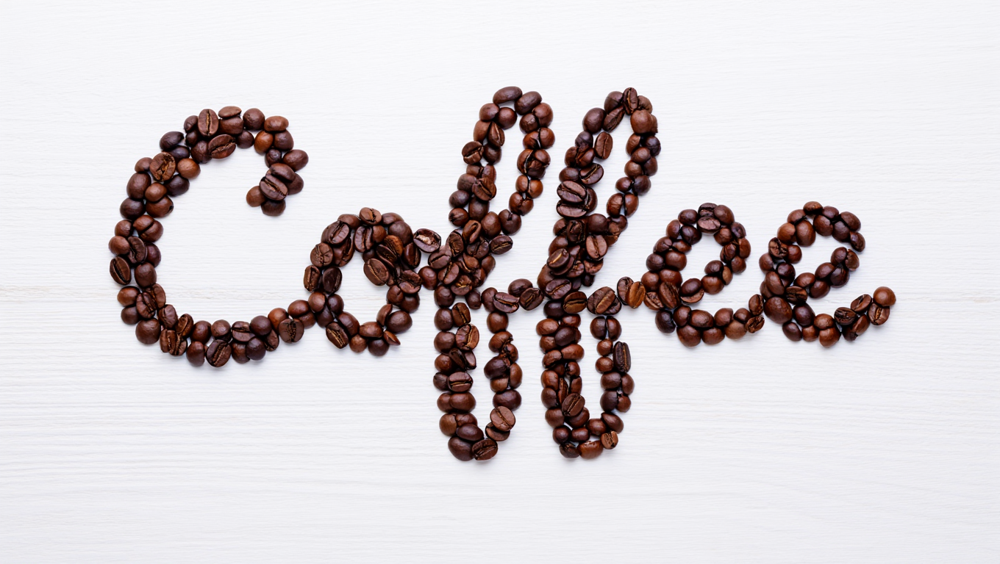
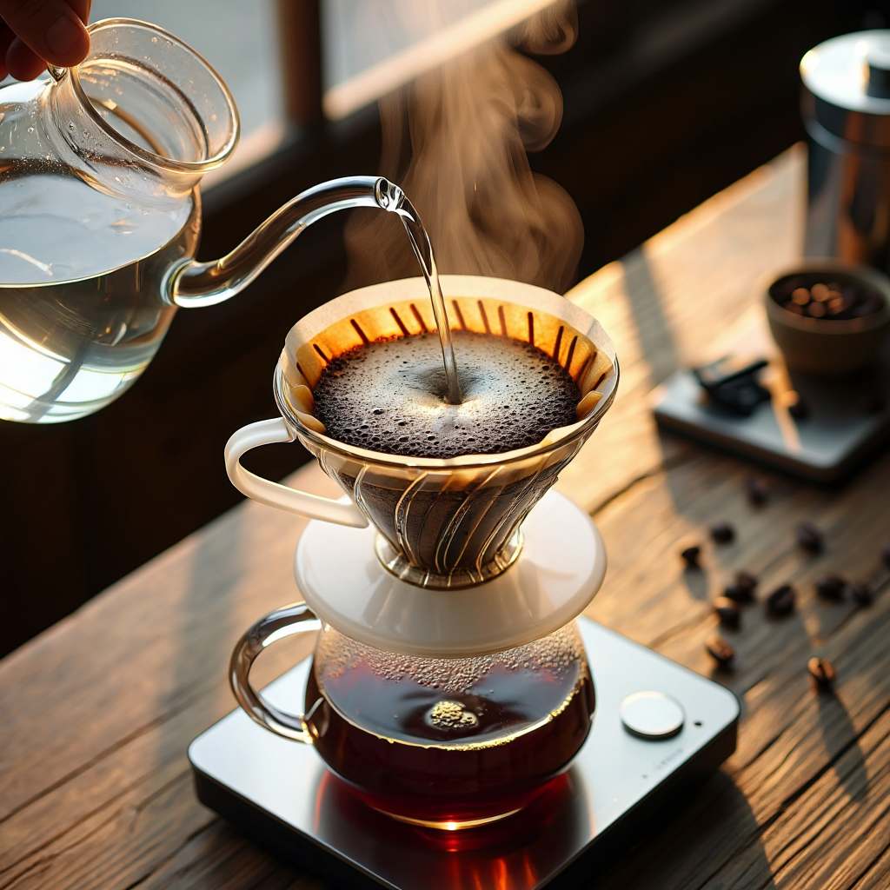

 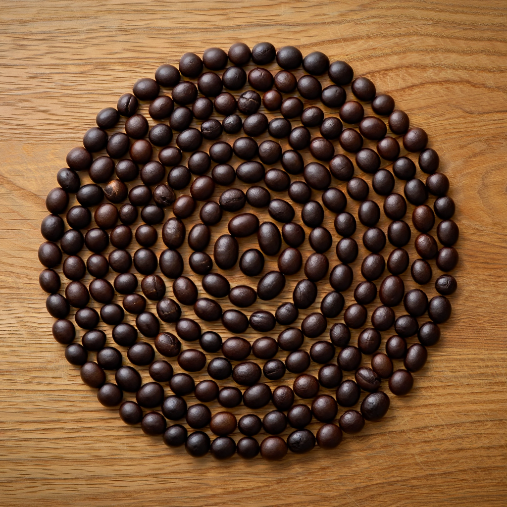
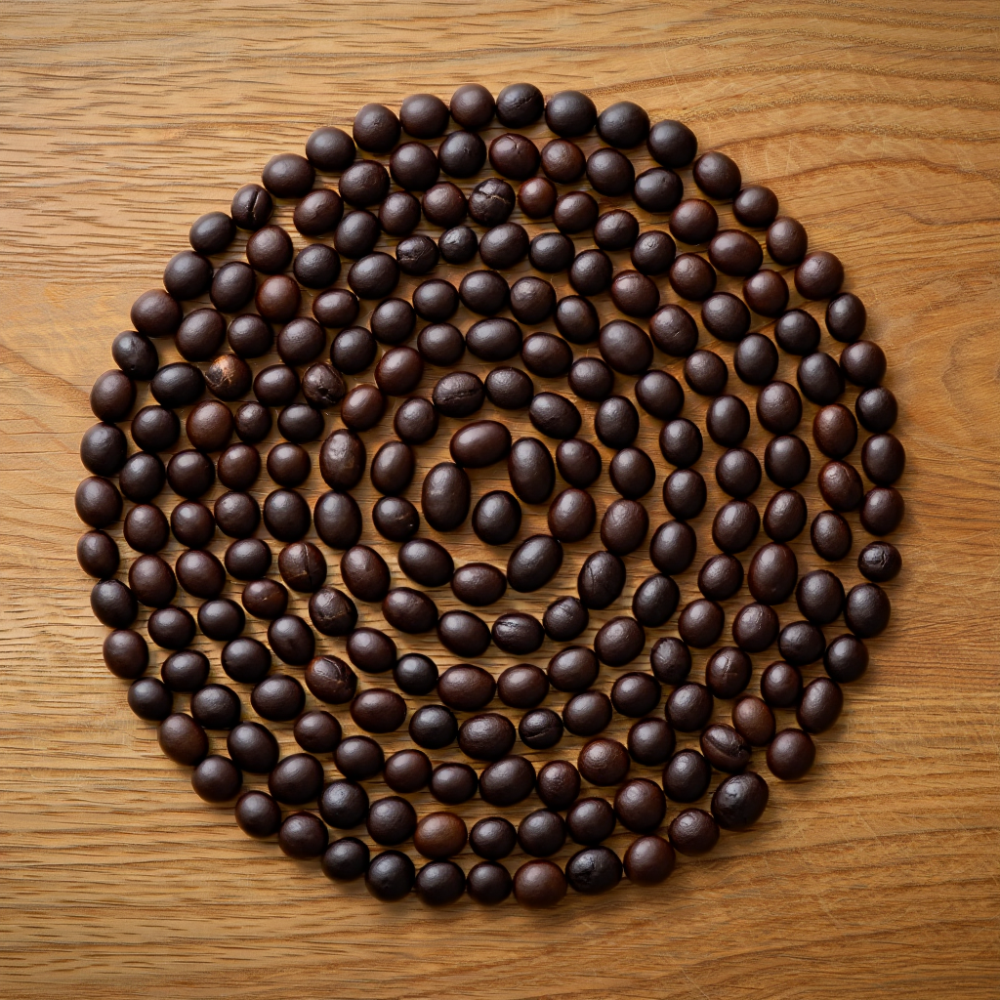